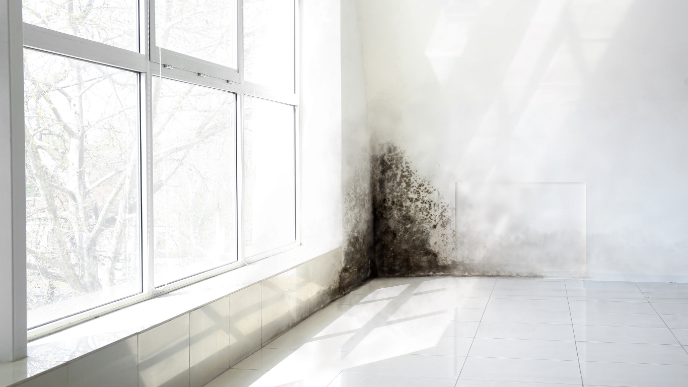

We provide professional mold remediation services that help homeowners remove dangerous bathroom mold safely while addressing the moisture issues causing it to return.
Bathrooms are one of the most common places for mold growth because they constantly deal with moisture, steam, and limited airflow. Black mold can appear around showers, ceilings, grout lines, and under sinks when humidity remains trapped for long periods. Understanding safe black mold removal methods helps homeowners protect indoor air quality and avoid spreading contamination during cleanup.
Bathrooms create ideal conditions for mold because warm moisture builds up daily from showers, baths, and sinks. Without proper ventilation, humidity settles onto walls, ceilings, caulking, and tile grout. Over time, damp surfaces become breeding grounds for mold spores.
Leaks beneath sinks, cracked grout, or poorly sealed tubs can also contribute to hidden moisture problems behind walls or flooring. In many homes, mold growth begins in small patches but spreads quickly once moisture remains untreated. Bathrooms without exhaust fans or adequate airflow are especially vulnerable to recurring mold growth.
Regular cleaning helps reduce surface buildup, but moisture control remains the most important factor in preventing black mold from returning.
Visible discoloration is often the first warning sign homeowners notice. Black or dark green patches around ceilings, grout lines, or corners usually indicate ongoing moisture exposure. A persistent musty smell is another common indicator that mold may be growing behind surfaces.
Additional signs may include:
If mold repeatedly returns after cleaning, there may be hidden moisture damage requiring professional inspection. Homeowners dealing with recurring contamination often benefit from expert mold remediation services that address both the mold and its moisture source.
Before attempting bathroom mold cleanup, safety precautions are essential. Disturbing mold can release spores into the air, potentially affecting indoor air quality and spreading contamination to nearby areas.
Protective equipment should include gloves, eye protection, and an N95 respirator mask. Ventilation is also important. Opening windows and running an exhaust fan during cleaning helps reduce airborne particles. Homeowners should avoid using fans that blow directly across contaminated surfaces, as this can spread spores throughout the bathroom.
Small surface-level mold areas may be manageable with proper precautions, but larger contamination affecting drywall or ceilings often requires professional containment procedures.
Surface mold on non-porous materials like tile, glass, or metal can often be cleaned using approved mold-cleaning products or mild detergent solutions. Scrubbing affected areas thoroughly helps remove visible residue while reducing lingering moisture buildup.
Porous materials such as drywall, ceiling tiles, and insulation are more difficult to clean safely because mold roots can penetrate beneath the surface. In these situations, removal and replacement may be necessary to fully eliminate contamination.
It is important never to paint over mold or ignore recurring growth. According to the Environmental Protection Agency, moisture problems must be corrected completely to prevent mold from returning after cleanup.
What appears to be a small bathroom mold issue may actually signal hidden water damage behind walls or beneath flooring. Leaking pipes, failed waterproofing, or long-term humidity problems can allow mold to spread into structural materials without obvious visible signs.
Once mold reaches insulation, subflooring, or ventilation systems, professional remediation becomes far more important. Specialists use containment barriers, HEPA filtration, and moisture detection equipment to remove contamination safely while limiting spore spread throughout the property.
Homeowners who delay treatment often face larger restoration projects later, especially if mold affects framing or nearby rooms connected through moisture pathways. Fast response through experienced water damage restoration services helps reduce long-term repair costs and structural concerns.
Successful mold removal depends heavily on controlling bathroom humidity. Running exhaust fans during and after showers helps reduce moisture buildup on walls and ceilings. In bathrooms without adequate ventilation, portable dehumidifiers may help maintain healthier indoor humidity levels.
Routine maintenance also plays an important role. Resealing grout lines, repairing leaks quickly, and wiping excess moisture from surfaces all help reduce recurring mold problems. Homeowners should regularly inspect areas beneath sinks and around tubs for signs of dampness or hidden leaks.
Improving airflow throughout the bathroom often makes a noticeable difference in preventing future mold growth.
Health concerns are usually the biggest priority when black mold appears. Many homeowners worry about respiratory irritation, odors, and indoor air quality, especially when mold affects frequently used spaces like bathrooms.
Another common concern is whether mold indicates larger hidden damage. Professional inspections provide clarity by identifying moisture sources and determining whether contamination has spread beyond visible surfaces.
Homeowners also want reassurance that cleanup will actually solve the problem rather than temporarily cover it up. Long-term results depend on proper drying, moisture control, and safe removal procedures.
Bathroom mold problems often start small but can quickly spread when moisture remains untreated. Proper cleanup involves more than surface cleaning — it requires identifying the source of moisture and ensuring contamination is fully removed.
If you’re looking for trusted help with black mold removal, SWAT Restoration provides professional mold remediation, moisture detection, and reconstruction services throughout North Texas. Our team identifies hidden damage, contains contamination safely, and restores affected areas with clear communication throughout the process. When bathroom mold becomes more than a simple cleaning issue, professional remediation helps protect both your property and your indoor air quality.